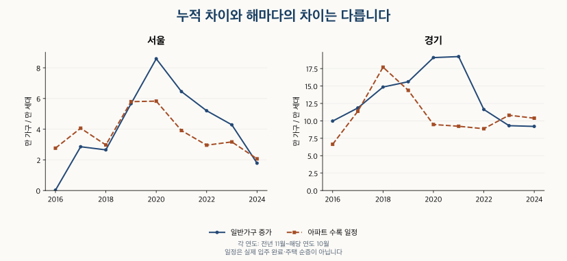

이사와 인구 · 가구 증가와 공급
가구 수 증가와 아파트 공급: 서울·경기 2015~2024 비교
서울 25구·경기 31시군의 일반가구 증가와 아파트 입주 일정을 같은 기간으로 비교합니다. 1인 가구 증가분, 경계 변경, 일정 중첩을 확인하고 공급 부족으로 단정할 수 없는 이유를 정리했습니다.
분석 기간 · 2015~2024년 가구 · 2015.11~2024.10 입주 일정 | 자료 기준일 · 공식표 갱신 2026-07-28 · 확인 2026-10-16
2015년에서 2024년까지 서울·경기 일반가구는 늘었습니다. 같은 조사 기준일 사이의 아파트 입주 일정 물량보다 증가분도 컸습니다. 하지만 그 차이를 ‘부족한 아파트 수’로 읽으면 분모부터 어긋납니다. 가구는 함께 생활하는 단위이고, 입주 일정은 공급되는 주택의 세대수이기 때문입니다.
서울 일반가구는 375,012가구, 경기는 1,207,330가구 늘었습니다. 2015년 11월~2024년 10월의 수록 입주 일정은 서울 335,290세대, 경기 988,593세대입니다. 1인 가구 증가분의 몫은 서울 145.3%, 경기 62.0%였습니다. 서울의 100% 초과는 다른 가구의 감소가 일부를 상쇄했다는 뜻입니다.
가구가 하나 늘면 아파트도 한 채 더 필요한가요?
가구는 주택 수요에 가까운 출발점입니다. 인구가 같아도 함께 살던 사람이 따로 생활하면 가구가 늘 수 있기 때문입니다. 다만 이 글의 일반가구는 총조사의 생활 단위입니다. 주민등록 세대나 아파트 단지의 주택 세대수와 같지 않습니다. 인구·세대·가구의 차이부터 구분하면 숫자의 의미가 명확해집니다.
일반가구에는 아파트 밖에서 사는 가구도 포함됩니다. 반면 비교하는 공급은 아파트 입주 일정입니다. 기존 주택으로 이사하거나 비아파트에 살고, 빈집을 활용할 수도 있습니다. 철거·멸실로 사라진 주택도 이 일정 합계에서는 빼지 않았습니다. 따라서 두 숫자를 빼는 것은 서로 다른 범위의 변화량 비교이며 주택 부족량 계산이 아닙니다.
기간도 맞춰야 합니다. 일반가구는 매년 11월 1일 기준이므로, 2015년과 2024년의 차이는 9년 동안의 증분입니다. 주 비교의 입주 일정은 2015년 11월~2024년 10월, 108개월을 더했습니다. 2015~2024년 1~12월을 모두 더한 120개월과 섞지 않았습니다. 월별 일정으로 날짜 안의 정확한 입주 시각까지 맞춘 비교는 아닙니다.
서울과 경기는 가구 증가가 수록 입주 일정보다 컸나요?
두 광역 지역 모두 그렇습니다. 일반가구 증가분에서 수록 입주 일정을 뺀 수치가 서울은 39,722, 경기는 218,737입니다. 두 광역값은 108개월이 모두 수록돼 있습니다. 다만 현재 제공처가 보여 주는 과거 일정의 합이며, 실제 입주 완료 실적을 확인한 결과는 아닙니다.
| 지역 | 일반가구 증분 | 1인 가구 증분 | 그 밖의 가구 증분 | 수록 일정(세대) | 가구 증분−일정 | 1인 증분 몫 |
|---|---|---|---|---|---|---|
| 서울 | 375,012 | 545,069 | -170,057 | 335,290 | 39,722 | 145.3% |
| 경기 | 1,207,330 | 748,788 | 458,542 | 988,593 | 218,737 | 62.0% |
누적 차이가 양수여도 매년 같은 방향은 아닙니다. 서울은 2016~2019년과 2024년에 일반가구 증가분보다 수록 일정이 컸습니다. 경기는 2018년과 2023~2024년에 그랬습니다. 서울의 2024년 일반가구 증분은 17,843가구, 해당 기준일 사이 일정은 20,661세대입니다. 경기의 같은 비교는 92,048가구와 103,834세대입니다.

서울 연간 비교 9개 구간 보기
| 조사 연도 | 일반가구 증분 | 1인 가구 증분 | 그 밖의 가구 증분 | 수록 일정(세대) | 가구 증분−일정 |
|---|---|---|---|---|---|
| 2016 | 215 | 23,116 | -22,901 | 27,626 | -27,411 |
| 2017 | 28,555 | 41,680 | -13,125 | 40,650 | -12,095 |
| 2018 | 26,506 | 48,881 | -22,375 | 29,709 | -3,203 |
| 2019 | 56,623 | 70,366 | -13,743 | 57,959 | -1,336 |
| 2020 | 85,901 | 90,914 | -5,013 | 58,271 | 27,630 |
| 2021 | 64,509 | 99,192 | -34,683 | 39,129 | 25,380 |
| 2022 | 52,019 | 74,294 | -22,275 | 29,577 | 22,442 |
| 2023 | 42,841 | 63,293 | -20,452 | 31,708 | 11,133 |
| 2024 | 17,843 | 33,333 | -15,490 | 20,661 | -2,818 |
경기 연간 비교 9개 구간 보기
| 조사 연도 | 일반가구 증분 | 1인 가구 증분 | 그 밖의 가구 증분 | 수록 일정(세대) | 가구 증분−일정 |
|---|---|---|---|---|---|
| 2016 | 99,682 | 41,445 | 58,237 | 66,399 | 33,283 |
| 2017 | 118,526 | 56,625 | 61,901 | 113,793 | 4,733 |
| 2018 | 148,547 | 73,045 | 75,502 | 177,016 | -28,469 |
| 2019 | 156,163 | 93,307 | 62,856 | 143,793 | 12,370 |
| 2020 | 190,771 | 115,117 | 75,654 | 94,728 | 96,043 |
| 2021 | 192,231 | 137,090 | 55,141 | 92,261 | 99,970 |
| 2022 | 116,301 | 91,047 | 25,254 | 88,694 | 27,607 |
| 2023 | 93,061 | 80,482 | 12,579 | 108,075 | -15,014 |
| 2024 | 92,048 | 60,630 | 31,418 | 103,834 | -11,786 |
2015~2024년 일반가구·1인 가구 수준 보기
| 지역 | 연도 | 일반가구 | 1인 가구 |
|---|---|---|---|
| 서울 | 2015 | 3,784,490 | 1,115,744 |
| 서울 | 2016 | 3,784,705 | 1,138,860 |
| 서울 | 2017 | 3,813,260 | 1,180,540 |
| 서울 | 2018 | 3,839,766 | 1,229,421 |
| 서울 | 2019 | 3,896,389 | 1,299,787 |
| 서울 | 2020 | 3,982,290 | 1,390,701 |
| 서울 | 2021 | 4,046,799 | 1,489,893 |
| 서울 | 2022 | 4,098,818 | 1,564,187 |
| 서울 | 2023 | 4,141,659 | 1,627,480 |
| 서울 | 2024 | 4,159,502 | 1,660,813 |
| 경기 | 2015 | 4,384,742 | 1,026,471 |
| 경기 | 2016 | 4,484,424 | 1,067,916 |
| 경기 | 2017 | 4,602,950 | 1,124,541 |
| 경기 | 2018 | 4,751,497 | 1,197,586 |
| 경기 | 2019 | 4,907,660 | 1,290,893 |
| 경기 | 2020 | 5,098,431 | 1,406,010 |
| 경기 | 2021 | 5,290,662 | 1,543,100 |
| 경기 | 2022 | 5,406,963 | 1,634,147 |
| 경기 | 2023 | 5,500,024 | 1,714,629 |
| 경기 | 2024 | 5,592,072 | 1,775,259 |
별도 참고: 달력연도 2015~2024 입주 일정 보기
아래 표는 각 해 1~12월 합입니다. 위의 11월 1일 조사 간 증분에 그대로 빼지 않습니다. 2015년 가구 수준은 시작점이며, 2014년 기준값을 붙이지 않았으므로 2015년 증분을 만들지 않았습니다.
| 지역 | 연도 | 수록 일정 | 관측 월/12 |
|---|---|---|---|
| 서울 | 2015 | 28,599 | 12/12 |
| 서울 | 2016 | 33,153 | 12/12 |
| 서울 | 2017 | 35,362 | 12/12 |
| 서울 | 2018 | 43,386 | 12/12 |
| 서울 | 2019 | 51,785 | 12/12 |
| 서울 | 2020 | 53,382 | 12/12 |
| 서울 | 2021 | 36,593 | 12/12 |
| 서울 | 2022 | 30,379 | 12/12 |
| 서울 | 2023 | 34,362 | 12/12 |
| 서울 | 2024 | 26,520 | 12/12 |
| 경기 | 2015 | 68,881 | 12/12 |
| 경기 | 2016 | 80,495 | 12/12 |
| 경기 | 2017 | 122,562 | 12/12 |
| 경기 | 2018 | 170,397 | 12/12 |
| 경기 | 2019 | 130,814 | 12/12 |
| 경기 | 2020 | 99,283 | 12/12 |
| 경기 | 2021 | 93,567 | 12/12 |
| 경기 | 2022 | 92,299 | 12/12 |
| 경기 | 2023 | 99,974 | 12/12 |
| 경기 | 2024 | 108,190 | 12/12 |
서울의 1인 가구 증가분 몫이 왜 100%를 넘나요?
서울 일반가구는 375,012가구 늘었지만, 1인 가구는 그보다 큰 545,069가구 늘었습니다. 그 밖의 가구가 170,057가구 줄어 전체 증가분을 낮췄기 때문입니다. 545,069÷375,012로 계산하면 145.3%입니다. 반면 경기는 1인 가구가 748,788가구, 다른 가구가 458,542가구 늘어 1인 가구 증가분의 몫이 62.0%였습니다.
이 비중은 전체 증가분 중 1인 가구 증가분의 비율입니다. 해당 연도의 모든 가구 중 1인 가구 비율과 다릅니다. 100%를 넘는 값을 잘라 내면 서울처럼 다른 가구가 감소한 상황을 놓칩니다. 총 가구가 줄어든 지역에서는 분모가 음수이므로 같은 계산의 부호도 달라집니다. 분모가 0이면 비율을 정의할 수 없습니다.
이 분해만으로 ‘1인 가구가 아파트 수요 증가의 원인’이라고 말할 수는 없습니다. 1인 가구가 늘어난 이유, 실제로 선택한 주택 유형과 면적, 소득이나 구매력은 여기서 확인하지 않았습니다. 가구 수가 늘어도 원하는 주택과 감당할 수 있는 비용은 서로 다릅니다.
서울 25구와 경기 31개 시·군은 어떻게 달랐나요?
56개 하위 지역을 모두 비교하면 일반가구 증분−수록 일정이 양수인 곳은 33곳, 음수인 곳은 23곳입니다. 양수는 수록 일정의 세대수보다 가구 증분의 숫자가 크다는 뜻이고, 음수는 그 반대입니다. 이를 공급 부족·과잉 지역의 개수로 바꾸지 않습니다.
지역별 입주 자료에는 일정이 수록되지 않은 달이 있습니다. 아래 표는 수록된 달의 합계와 관측 월 수를 함께 표시했습니다. 빠진 달을 실제 입주 0세대로 채운 결과가 아닙니다. 서울 25구와 경기 31시·군의 수록 합계가 광역 합계와 맞는 것은 확인했지만, 이것만으로 모든 실제 입주가 수록됐다고 보장할 수는 없습니다.
서울 25구 전체 비교표
| 지역 | 일반가구 증분 | 1인 가구 증분 | 그 밖의 가구 증분 | 수록 일정(세대) | 가구 증분−일정 | 1인 증분 몫 | 일정 관측 월/108 | 경계 변경 검토 |
|---|---|---|---|---|---|---|---|---|
| 종로구 | 3,063 | 7,003 | -3,940 | 3,120 | -57 | 228.6% | 19/108 | 확인 사건 없음 |
| 중구 | 8,644 | 9,807 | -1,163 | 6,636 | 2,008 | 113.5% | 38/108 | 확인 사건 없음 |
| 용산구 | 3,178 | 9,420 | -6,242 | 4,993 | -1,815 | 296.4% | 38/108 | 확인 사건 없음 |
| 성동구 | 8,175 | 13,183 | -5,008 | 12,294 | -4,119 | 161.3% | 38/108 | 확인 사건 없음 |
| 광진구 | 10,891 | 18,723 | -7,832 | 6,432 | 4,459 | 171.9% | 64/108 | 확인 사건 없음 |
| 동대문구 | 14,090 | 19,471 | -5,381 | 15,512 | -1,422 | 138.2% | 80/108 | 확인 사건 없음 |
| 중랑구 | 15,789 | 24,011 | -8,222 | 10,565 | 5,224 | 152.1% | 79/108 | 확인 사건 없음 |
| 성북구 | 9,971 | 18,225 | -8,254 | 15,383 | -5,412 | 182.8% | 55/108 | 확인 사건 없음 |
| 강북구 | 5,263 | 17,918 | -12,655 | 4,954 | 309 | 340.5% | 39/108 | 확인 사건 없음 |
| 도봉구 | 4,860 | 15,999 | -11,139 | 1,982 | 2,878 | 329.2% | 45/108 | 확인 사건 없음 |
| 노원구 | 830 | 21,053 | -20,223 | 7,244 | -6,414 | 2536.5% | 23/108 | 확인 사건 없음 |
| 은평구 | 19,164 | 26,632 | -7,468 | 22,189 | -3,025 | 139.0% | 83/108 | 확인 사건 없음 |
| 서대문구 | 16,945 | 16,610 | 335 | 15,950 | 995 | 98.0% | 43/108 | 확인 사건 없음 |
| 마포구 | 12,986 | 20,890 | -7,904 | 11,382 | 1,604 | 160.9% | 56/108 | 확인 사건 없음 |
| 양천구 | 5,221 | 15,054 | -9,833 | 10,007 | -4,786 | 288.3% | 62/108 | 확인 사건 없음 |
| 강서구 | 38,400 | 49,758 | -11,358 | 16,655 | 21,745 | 129.6% | 102/108 | 확인 사건 없음 |
| 구로구 | 14,860 | 21,644 | -6,784 | 7,022 | 7,838 | 145.7% | 55/108 | 확인 사건 없음 |
| 금천구 | 19,233 | 22,639 | -3,406 | 8,998 | 10,235 | 117.7% | 84/108 | 확인 사건 없음 |
| 영등포구 | 28,842 | 31,265 | -2,423 | 20,754 | 8,088 | 108.4% | 96/108 | 확인 사건 없음 |
| 동작구 | 12,615 | 21,194 | -8,579 | 12,888 | -273 | 168.0% | 43/108 | 확인 사건 없음 |
| 관악구 | 35,512 | 53,303 | -17,791 | 6,041 | 29,471 | 150.1% | 62/108 | 확인 사건 없음 |
| 서초구 | 4,353 | 11,947 | -7,594 | 21,807 | -17,454 | 274.5% | 76/108 | 확인 사건 없음 |
| 강남구 | 14,976 | 17,377 | -2,401 | 27,436 | -12,460 | 116.0% | 80/108 | 확인 사건 없음 |
| 송파구 | 36,876 | 36,239 | 637 | 27,186 | 9,690 | 98.3% | 76/108 | 해당 |
| 강동구 | 30,275 | 25,704 | 4,571 | 37,860 | -7,585 | 84.9% | 89/108 | 확인 사건 없음 |
경기 31개 시·군 전체 비교표
| 지역 | 일반가구 증분 | 1인 가구 증분 | 그 밖의 가구 증분 | 수록 일정(세대) | 가구 증분−일정 | 1인 증분 몫 | 일정 관측 월/108 | 경계 변경 검토 |
|---|---|---|---|---|---|---|---|---|
| 수원시 | 81,010 | 69,865 | 11,145 | 69,579 | 11,431 | 86.2% | 93/108 | 해당 |
| 성남시 | 27,505 | 38,106 | -10,601 | 39,443 | -11,938 | 138.5% | 52/108 | 해당 |
| 의정부시 | 39,680 | 27,471 | 12,209 | 40,929 | -1,249 | 69.2% | 84/108 | 확인 사건 없음 |
| 안양시 | 14,617 | 19,695 | -5,078 | 35,994 | -21,377 | 134.7% | 79/108 | 해당 |
| 부천시 | 20,840 | 32,923 | -12,083 | 30,661 | -9,821 | 158.0% | 105/108 | 확인 사건 없음 |
| 광명시 | -10,402 | 5,056 | -15,458 | 13,727 | -24,129 | -48.6% | 35/108 | 해당 |
| 평택시 | 96,131 | 53,270 | 42,861 | 81,398 | 14,733 | 55.4% | 82/108 | 확인 사건 없음 |
| 동두천시 | 2,551 | 4,997 | -2,446 | 1,929 | 622 | 195.9% | 15/108 | 확인 사건 없음 |
| 안산시 | 9,430 | 22,651 | -13,221 | 29,187 | -19,757 | 240.2% | 56/108 | 확인 사건 없음 |
| 고양시 | 78,598 | 54,871 | 23,727 | 42,854 | 35,744 | 69.8% | 49/108 | 확인 사건 없음 |
| 과천시 | 6,641 | 749 | 5,892 | 12,459 | -5,818 | 11.3% | 13/108 | 확인 사건 없음 |
| 구리시 | 11,079 | 8,666 | 2,413 | 11,562 | -483 | 78.2% | 28/108 | 확인 사건 없음 |
| 남양주시 | 65,641 | 35,094 | 30,547 | 42,998 | 22,643 | 53.5% | 46/108 | 확인 사건 없음 |
| 오산시 | 27,234 | 17,494 | 9,740 | 22,628 | 4,606 | 64.2% | 34/108 | 확인 사건 없음 |
| 시흥시 | 69,922 | 31,557 | 38,365 | 60,589 | 9,333 | 45.1% | 64/108 | 확인 사건 없음 |
| 군포시 | 7,265 | 13,591 | -6,326 | 4,952 | 2,313 | 187.1% | 32/108 | 확인 사건 없음 |
| 의왕시 | 5,774 | 3,959 | 1,815 | 10,874 | -5,100 | 68.6% | 32/108 | 확인 사건 없음 |
| 하남시 | 75,872 | 28,591 | 47,281 | 47,265 | 28,607 | 37.7% | 49/108 | 해당 |
| 용인시 | 89,443 | 47,944 | 41,499 | 65,781 | 23,662 | 53.6% | 86/108 | 해당 |
| 파주시 | 58,535 | 28,015 | 30,520 | 33,274 | 25,261 | 47.9% | 35/108 | 확인 사건 없음 |
| 이천시 | 20,951 | 14,425 | 6,526 | 9,255 | 11,696 | 68.9% | 35/108 | 확인 사건 없음 |
| 안성시 | 17,525 | 12,900 | 4,625 | 20,861 | -3,336 | 73.6% | 27/108 | 확인 사건 없음 |
| 김포시 | 72,265 | 30,708 | 41,557 | 50,796 | 21,469 | 42.5% | 47/108 | 확인 사건 없음 |
| 화성시 | 186,637 | 77,792 | 108,845 | 122,010 | 64,627 | 41.7% | 83/108 | 해당 |
| 광주시 | 50,819 | 21,416 | 29,403 | 29,531 | 21,288 | 42.1% | 35/108 | 확인 사건 없음 |
| 양주시 | 45,834 | 19,985 | 25,849 | 39,888 | 5,946 | 43.6% | 48/108 | 확인 사건 없음 |
| 포천시 | 5,752 | 7,152 | -1,400 | 4,095 | 1,657 | 124.3% | 10/108 | 확인 사건 없음 |
| 여주시 | 9,694 | 6,917 | 2,777 | 4,450 | 5,244 | 71.4% | 18/108 | 확인 사건 없음 |
| 연천군 | 952 | 1,643 | -691 | 1,071 | -119 | 172.6% | 4/108 | 확인 사건 없음 |
| 가평군 | 5,041 | 3,955 | 1,086 | 2,318 | 2,723 | 78.5% | 11/108 | 확인 사건 없음 |
| 양평군 | 14,494 | 7,330 | 7,164 | 6,235 | 8,259 | 50.6% | 23/108 | 확인 사건 없음 |
경기 광명은 일반가구가 10,402가구 감소했습니다. 이런 지역에서 1인 가구 증가분의 몫은 ‘전체 증가를 몇 퍼센트 설명했다’는 일상적인 표현과 맞지 않습니다. 증가·감소의 절대값과 부호를 먼저 보세요. 가구의 거처 구성은 아파트 거주가구 비율 비교에서 별도로 확인할 수 있습니다. 그 글의 경기 비교 범위는 수집된 20시이고, 이 글은 31시·군 전체입니다.
행정경계나 일정 중첩을 바꾸면 결과도 달라지나요?
지역 수치는 각 연도에 공표된 행정구역 기준입니다. 같은 이름의 시·구라도 면적이 그대로였다고 가정하면 안 됩니다. 비교 기간 중 아래 네 경계 변경을 확인했습니다. 앞 표의 ‘확인 사건 없음’도 다른 경계 변경이 전혀 없었다는 보증은 아닙니다.
| 시행일 | 변경 내용 |
|---|---|
| 2015-12-07 | 송파·성남·하남 경계 변경 |
| 2019-09-13 | 수원·용인 경계 변경 |
| 2020-07-24 | 수원·화성 경계 변경 |
| 2022-04-15 | 안양·광명 경계 변경 |
관련 지역을 묶으면 확인한 내부 경계 이동의 영향을 덜 받는 보조 비교가 됩니다. 송파·성남·하남을 합한 차이는 26,359, 수원·용인·화성을 합하면 99,720입니다. 그러나 이 합계도 전체 경계 변동을 보정한 고정 면적 통계나 하나의 생활권 통계는 아닙니다. 안양·광명 합계의 1인 증분 몫 587.2%처럼, 전체 순증이 작으면 비율이 특히 커집니다.
| 지역 | 일반가구 증분 | 1인 가구 증분 | 그 밖의 가구 증분 | 수록 일정(세대) | 가구 증분−일정 | 1인 증분 몫 |
|---|---|---|---|---|---|---|
| 서울·경기 합계 | 1,582,342 | 1,293,857 | 288,485 | 1,323,883 | 258,459 | 81.8% |
| 송파·성남·하남 합계 | 140,253 | 102,936 | 37,317 | 113,894 | 26,359 | 73.4% |
| 수원·용인·화성 합계 | 357,090 | 195,601 | 161,489 | 257,370 | 99,720 | 54.8% |
| 안양·광명 합계 | 4,215 | 24,751 | -20,536 | 49,721 | -45,506 | 587.2% |
일정의 포괄 범위에도 민감합니다. 판교 2021년 5월에는 총 974세대와 그 안의 445세대가 함께 수록된 것으로 보이는 사례가 있습니다. 공식 공급 안내의 529세대 + 445세대 구성을 대조해, 445세대를 한 번 제외하는 민감도를 계산했습니다. 경기 누적 차이는 218,737에서 219,182로 바뀌고 성남은 음수 방향을 유지합니다. 알려진 사례 하나의 민감도이며 모든 중복·누락을 정정한 결과가 아닙니다.
| 지역 | 원래 가구 증분−일정 | 제거량(세대) | 제거 후 차이 |
|---|---|---|---|
| 경기 | 218,737 | 445 | 219,182 |
| 성남시 | -11,938 | 445 | -11,493 |
이사할 동네에서는 무엇을 더 확인해야 하나요?
가구가 늘었다는 관찰은 유용합니다. 다만 ‘가구가 일정 물량보다 많이 늘었으니 아파트가 부족하다’는 설명을 들었다면 다음 질문으로 구체화해 보세요.
- 같은 기간·지역인가요? 조사 기준일 사이의 변화인지, 달력연도 합인지 확인하고 경계 변경과 빠진 달을 봅니다.
- 어떤 가구가 늘었나요? 1인 가구와 다른 가구의 증분, 실제 주거 유형을 구분합니다. 가구 수만으로 희망 면적이나 구매력을 추정하지 않습니다.
- 어떤 주택이 실제로 사용 가능해졌나요? 일정 변경, 실제 입주, 임대 구성, 멸실, 빈집, 비아파트와 기존 주택을 따로 확인합니다.
- 내 조건에 맞는 집인가요? 통근·면적·점유 형태·예산과 실제 매물을 확인합니다. 광역 차이의 부호는 특정 단지의 가격 전망을 대신하지 못합니다.
자료·계산 방법과 공개 집계
가구는 KOSIS 인구주택총조사의 일반가구와 1인 가구 연령 총계입니다. 2015~2024년 서울·경기와 56개 하위 지역의 정확한 총계 1,160개를 KB 제공값과 대조했습니다. 공식표 갱신일은 2026년 7월 28일, 자료 확인일은 2026년 10월 16일입니다. 공식표에는 2025년도 있지만 이 글은 원래 비교 기간과 KB 공통 기간인 2024년까지를 사용했습니다.
입주는 KB 공급 통계의 현재 수록 월별 일정입니다. 58개 지역을 같은 확인 시점에 조회해 합계와 기간을 확인했습니다. 가구는 두 조사시점의 차이, 일정은 해당 월 구간의 수록 합계입니다. ‘그 밖의 가구 증분’은 일반가구 증분 − 1인 가구 증분이고, 기여 비중은 1인 가구 증분÷일반가구 증분×100을 마지막에 소수 첫째 자리로 반올림했습니다.
서울 25구·경기 31시군 합과 광역값, 공식표와 제공값, 두 방식의 산술 계산을 대조했습니다. 모든 지역의 과거 경계를 일괄 보정하거나 실제 입주 완료·멸실·비아파트·빈집을 연결하지 않았습니다. 공개 집계 파일(JSON)에서 기준일·지역별 값과 보조 민감도를 확인할 수 있습니다. 개별 가구·계약 기록은 포함하지 않습니다.
분석·집필: 파파펭귄 (Nobot Kang). 에이전트로 공식 원표 대조·기간 정렬·검산·도표 제작과 초안 검토를 보조했습니다.